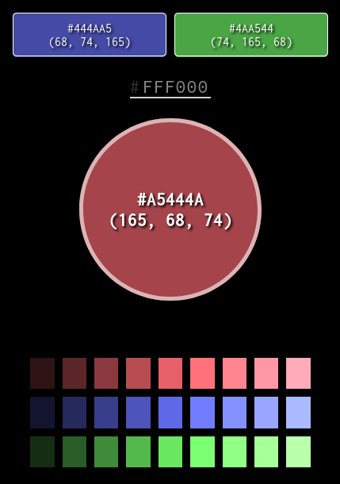
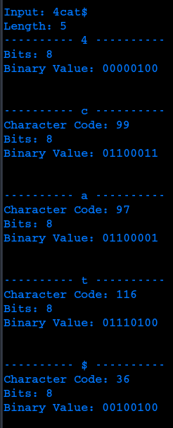

Color Palette Generator
|  |
Converts hexadecimal color value input to RGB, or generates random hex value. Triadic color values are determined and displayed with dark-to-light corresponding color palettes. |
| PROJECT LINK | |
Binary Converter
|  |
Converts characters and digits to binary values. Groups digits together as a single int. |
| PROJECT LINK | |